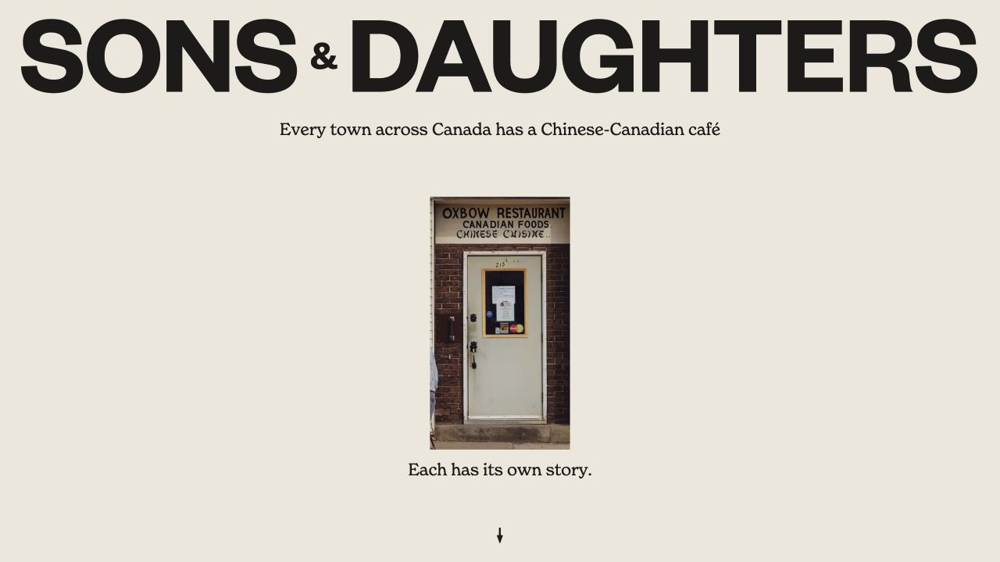
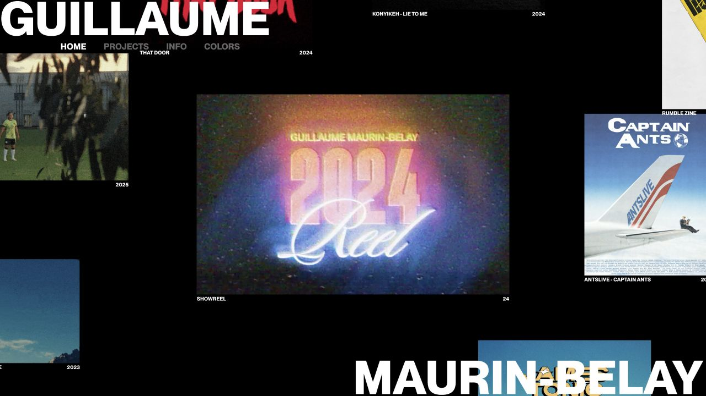
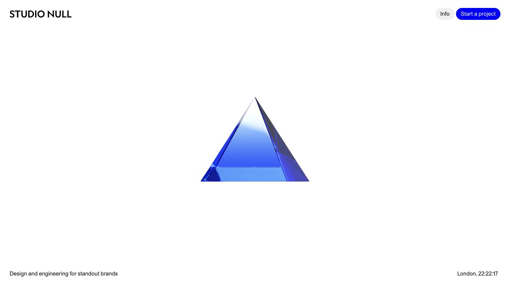
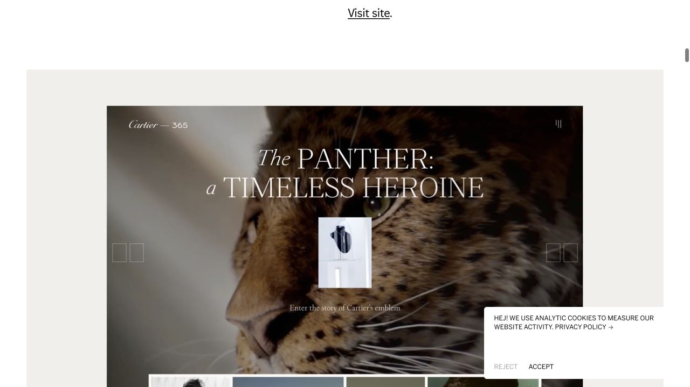
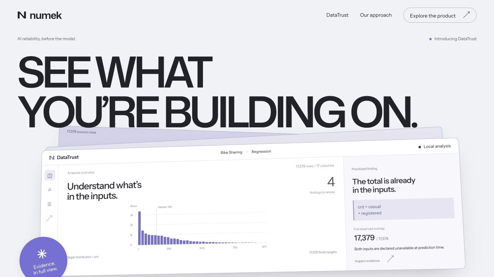
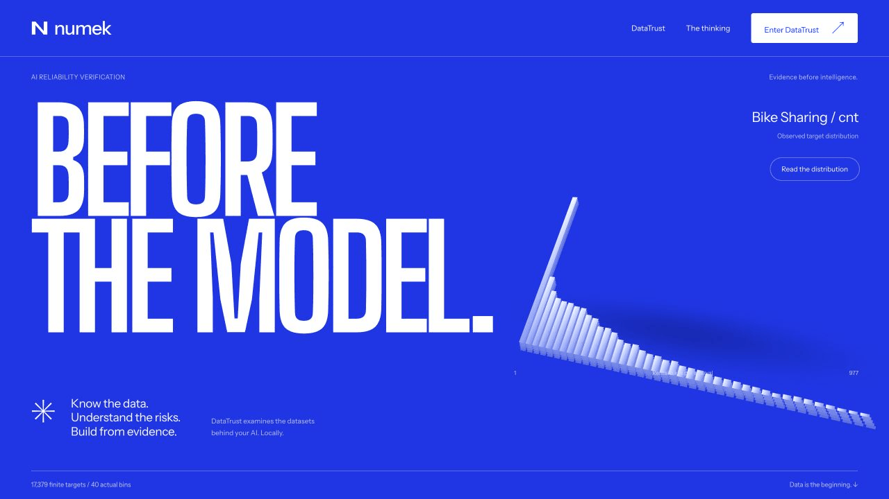

A new set, developed at the scale it needs to be judged.
The first round was rejected. Its static studies were too thin: substitute fonts, small product drawings, and insufficient visual development. This revision uses actual licensed fonts, independent page compositions, original data-derived graphics and working analytical views. The full three-screen prototypes still follow the creative-direction review.

Sons & Daughters
Live opening, scroll reveal and later portrait section inspected.The subject begins in a narrow central opening beneath an oversized masthead, then expands into a broad photographic view. Later, unequal portrait lengths and the same strong type retain the identity. The useful transfer is a change in subject scale with continuity. Direction 01 gives the analytical surface that role; no café imagery or story is reused.
Original site · Later captured state

Guillaume Maurin-Belay
Live opening and scroll state inspected; individual project detail pages not inspected.The type is forceful and stable while project material occupies unexpectedly different scales. The result comes from composition rather than interface ornament. Directions 04 and 05 borrow the confidence of that scale contrast. They use real evidence and clearly labeled evidence-family specimens instead of portfolio images.
Original site · Scrolled capture

Studio Null
Live initial object and a changed reflective state observed; further site behavior not established.One subject, clear material definition, and restrained perimeter type establish the opening. The lesson is concentrated attention. Direction 03 gives that role to a histogram derived from actual data. Its dimension is only a brand presentation; a user-controlled transition opens the fully labeled flat chart.
Original site

Cartier 365 / 14islands
Creator case study and visible composition inspected. Full live Cartier interactions not inspected; some embedded media did not play.A contained subject sits within a larger image and typographic frame. Direction 02 adapts that control of focus to an authored DataTrust report. The source evidence is the object of attention. None of Cartier’s imagery, marks or jewellery presentation is reused.
Creator case study
The earlier live inspections of Micro, AI in Design, The Pudding and Hyperbolic remain relevant and are individually attributed in the new studies. Open the earlier research board. The proposal attached to that earlier board is rejected and archived. References were read and observed only to the extent stated; no claim of exhaustive interaction testing is made.
Actual browser motion, sampled.

01 / Pressing the evidence seal aligns the source/check layers into the analytical surface.
Try the live interaction
03 / The dimensional histogram resolves into the same data with axes, counts and a median reference.
Try the live interactionThese GIFs use genuine sequential browser screenshots captured during the interactions, with captured frame intervals. First and last frames are held for reading. They are sampled previews, not continuous high-frame-rate recordings; no generated intermediate frames were added. Reduced-motion preferences disable the transitions in the live studies.
A critical reading of the new set.
| Direction | Strongest opportunity | What still needs proving |
|---|
| 01 / In full view | Most direct connection between company identity and a readable product surface. | The safest of the five; its full landing sequence needs more than a familiar interface reveal to stand apart. |
| 02 / An open record | Coherent public identity and a distinctive, serious report reader. | Dense investigations and non-document evidence must remain efficient inside this reading language. |
| 03 / Before the model | The clearest original graphic-to-product transition; strong typographic recognition. | The dimensional view must remain an introduction, never a substitute for accurate plotting and source inspection. |
| 04 / Read between the rows | Strong visual interpretation: a single row opens into a meaningful population-level question. | The full page needs equally good examples beyond the arithmetic relationship so it communicates DataTrust’s depth. |
| 05 / A common language | Best immediate view of the product’s breadth across representations. | Its individual specimen treatments need further modality-specific development; the full app must support deeper evidence than this shared regression example. |
All five use the same stored Bike Sharing regression evidence for direct comparison: 17,379 rows, 17 supplied columns and four findings. The supported identity is cnt = casual + registered. Supplied timing declarations make the input set worth investigating; observed algebra alone does not prove leakage or actual model use. No universal regression score is presented.
Direction 05’s text, image and temporal graphics are illustrative capability specimens. Only its tabular graphic contains measured fixture data. There is no cloud monitoring, certification, collaboration or agent claim.
Local run instructions and scope · Verification notes · Rejected first round